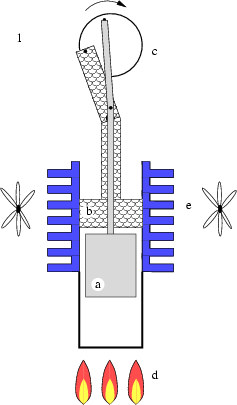
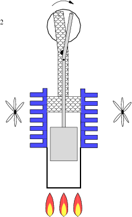
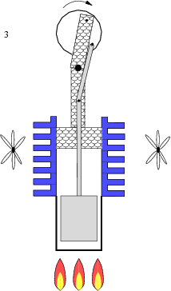
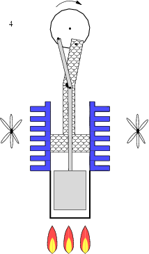

Современные подводные лодки (строительство которых началось с конца 1920-х годов) имеют 2 корпуса: водопроницаемый лёгкий корпус, функция которого заключается в придании кораблю гидродинамически совершённых обводов, и водонепроницаемый прочный корпус, способный выдержать давление воды на больших глубинах погружения. Внутри прочный корпус разделён на отсеки переборками, что повышает живучесть корабля в случае пробоины или пожара. Типичный материал прочного корпуса — легированная сталь с высоким пределом текучести.
Погружение осуществляется путём заполнения нескольких цистерн главного балласта, а всплытие — вытеснением воды из балластных цистерн сжатым воздухом или другим газом. На подводной лодке имеется множество различных цистерн, предназначенных для управления дифферентом (Диффере́нт — разница осадок судна носом и кормой.), для хранения топлива, питьевой воды, балласта и т. д. Для продувки балластных цистерн на ПЛ имеется система воздуха высокого давления (ВВД) давлением 200—400 кг/см2, однако на некоторых лодках имеется система аварийного продувания балласта газами пороховых.
Изменение глубины производится с помощью горизонтальных рулей (гидропланов). Отдельно выделяют класс батипланов — подводных аппаратов, погружающихся только за счёт действия гидродинамических сил. Для движения подводных лодок в надводном положении применяются ядерные или дизельные энергетические установки; в подводном положении — ядерные установки, электрические аккумуляторы, на малых глубинах — дизельные установки, имеющие соответствующие выдвижные воздухозаборные устройства. Для подзарядки аккумуляторов дизель-электрические подводные лодки используют дизельные двигатели как дизель-генераторы, а некоторые современные лодки — ещё и электрохимические генераторы. Атомные подводные лодки заряжают аккумуляторы от турбогенераторов либо от дизель-генераторов. В эпоху, предшествующую открытиям в области ядерных реакторов, для подводных лодок было разработано несколько проектов альтернативных подводных двигателей (например, газотурбинный двигатель Вальтера, который обеспечивал как надводный, так и подводный ход подводной лодки). В настоящее время интерес к воздухонезависимым энергоустановкам для неатомных подводных лодок снова возрос, перспективным считается использование двигателей Стирлинга. Обычным движителем являются гребные винты, но на некоторых подводных лодках устанавливают водомётные движители, которые двигают судно по принципу реактивной струи.
Субмарины типа «Готланд» стали первыми серийными лодками с двигателями Стирлинга, которые позволяют им находиться под водой непрерывно до 20 суток. В настоящее время все подводные лодки ВМС Швеции оснащены двигателями Стирлинга, а шведские кораблестроители уже хорошо отработали технологию оснащения этими двигателями подводных лодок путём врезания дополнительного отсека, в котором и размещается новая двигательная установка. Двигатели работают на жидком кислороде, который используется в дальнейшем для дыхания, имеют очень низкий уровень шума, а недостатки (размер и охлаждение) на подводной лодке несущественны.В настоящее время двигатель Стирлинга рассматривается как многообещающий единый всережимный двигатель НАПЛ 5-го поколения.
Двигатель Стирлинга использует цикл Стирлинга. Цикл Стирлинга состоит из четырёх фаз и разделён двумя переходными фазами: нагрев; расширение; переход к источнику холода; охлаждение; сжатие и переход к источнику тепла. Таким образом, при переходе от тёплого источника к холодному источнику происходит расширение и сжатие газа, находящегося в цилиндре. При этом изменяется давление, за счёт чего можно получить полезную работу. Нагрев и охлаждение рабочего тела (участки 4 и 2) производится рекуператором. В идеале количество тепла, отдаваемое и отбираемое рекуператором, одинаково. Полезная работа производится только за счёт изотерм, т.е. зависит от разницы температур нагревателя и охладителя.
Превращение вещества сопровождается выделением свободной энергии лишь в том случае, если вещество обладает запасом энергий. Последнее означает, что микрочастицы вещества находятся в состоянии с энергией покоя большей, чем в другом возможном, переход в которое существует. Самопроизвольному переходу всегда препятствует энергетический барьер, для преодоления которого микрочастица должна получить извне какое-то количество энергии — энергии возбуждения. Экзоэнергетическая реакция состоит в том, что в следующем за возбуждением превращении выделяется энергии больше, чем требуется для возбуждения процесса. Существуют два способа преодоления энергетического барьера: либо за счёт кинетической энергии сталкивающихся частиц, либо за счёт энергии связи присоединяющейся частицы.
Если иметь в виду макроскопические масштабы энерговыделения, то необходимую для возбуждения реакций кинетическую энергию должны иметь все или сначала хотя бы некоторая доля частиц вещества. Это достижимо только при повышении температуры среды до величины, при которой энергия теплового движения приближается к величине энергетического порога, ограничивающего течение процесса. В случае молекулярных превращений, то есть химических реакций, такое повышение обычно составляет сотни кельвинов, в случае же ядерных реакций — это минимум 10000000 K из-за очень большой высоты кулоновских барьеров сталкивающихся ядер. Тепловое возбуждение ядерных реакций осуществлено на практике только при синтезе самых лёгких ядер, у которых кулоновские барьеры минимальны (термоядерный синтез).
Возбуждение присоединяющимися частицами не требует большой кинетической энергии, и, следовательно, не зависит от температуры среды, поскольку происходит за счёт неиспользованных связей, присущих частицам сил притяжения. Но зато для возбуждения реакций необходимы сами частицы. И если опять иметь в виду не отдельный акт реакции, а получение энергии в макроскопических масштабах, то это возможно лишь при возникновении цепной реакции. Последняя же возникает, когда возбуждающие реакцию частицы снова появляются, как продукты экзоэнергетической реакции.